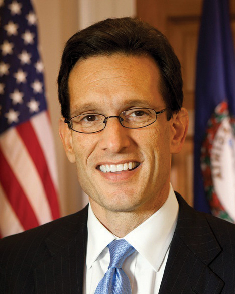
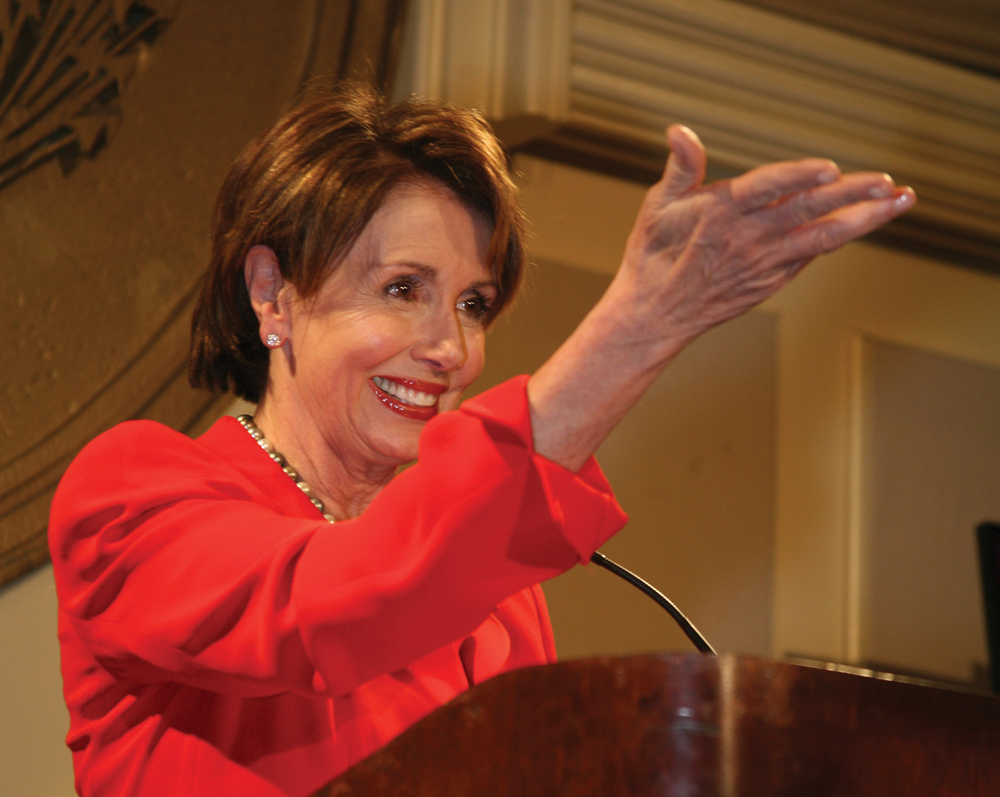
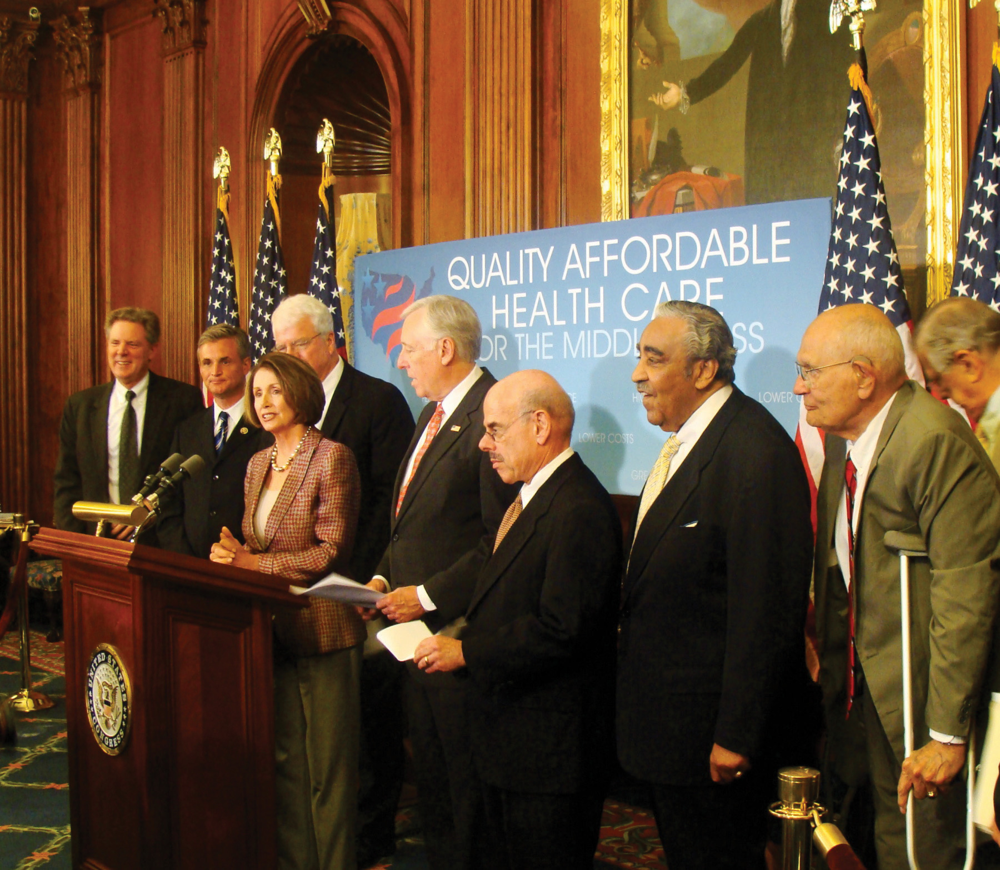
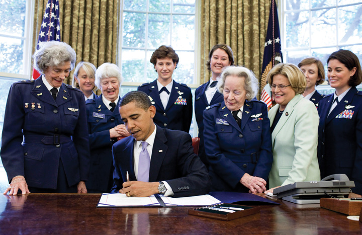
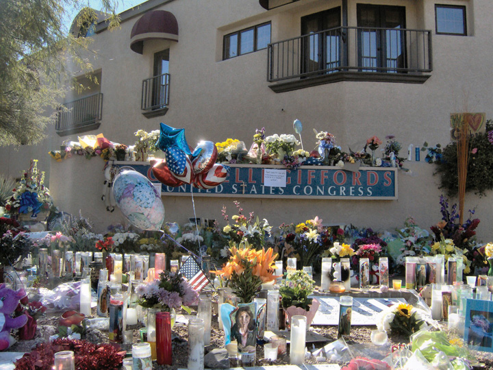
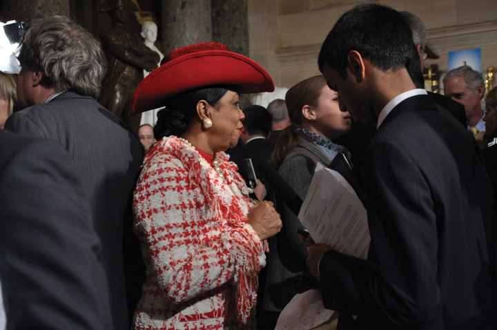

On July 30, 2010, Congressman Anthony Weiner, a Democrat from Brooklyn, New York, made an impassioned plea on the House floor blasting Republican members who were blocking a bill allocating $7 billion to monitor the health of first responders to the 9/11 attacks on the World Trade Center. He begged members to vote their conscience and to do what is right rather than to adhere to party lines. He refused to yield the floor when he was called out of order, shouting and gesticulating to emphasize his point.
Weiner’s angry and emotional two-minute outburst might well have gone the way of most congressional speechmaking, and been ignored by the press and the public. Few speeches, especially those made by little-known congressmen, receive media coverage other than on the Cable Satellite Public Affairs Network (C-SPAN), which routinely reports congressional proceedings. Instead, videos of Weiner’s remarks were posted on YouTube and other websites and quickly went viral. Within forty-eight hours, the YouTube video had been viewed over half a million times. The speech caught the attention of news producers and received coverage on morning and evening national network newscasts, cable news, radio, newspapers, and online publications. The YouTube video sparked numerous remixes, including one where Weiner is featured singing his rant to a dance tune.
Raw Video: NY Rep Weiner’s Anti-GOP Rant
(click to see video)Congressman Anthony Weiner (D-NY) captured media attention with an emotional speech on the floor of the House of Representatives; the speech sparked a YouTube video that went viral.
Weiner’s speech brings to light a number of points about Congress and the media. Congress receives significantly less media attention than the president. Yet members rely on the media to publicize their actions, rally support for their positions, and run for reelection. It takes extraordinary efforts and publicity-seeking strategies for even prominent members to get press attention. In the current era, these strategies include making use of digital media, such as Twitter feeds and YouTube videos, to drive media coverage. Political leaders must be responsible in their use of digital media, as Weiner learned the hard way. In May 2011, the media reported that Weiner had sent inappropriate photos of himself via Twitter to women who were not his wife. The resulting scandal forced his resignation.
The media’s relationship with Congress maintains the distinction between the national institution of Congress and its locally elected members. Congress as an institution commands national media attention, while members of Congress are covered extensively in their local press.Wendy J. Schiller, Partners and Rivals (Princeton, NJ: Princeton University Press, 2000). The fact that Weiner’s speech dealing with an issue of particular concern to his constituents in New York gained national media attention was atypical. It was made possible because his rant conformed to the dramatic expectations of modern-day political media.
Congress is a national institution composed of locally elected politicians who represent distinct constituencies. Members rely on the support of voters in their home districts to keep their job in Congress. Members of Congress must work together to consider policy issues and make laws. Yet getting one hundred senators and 435 members of the House of Representatives to work collectively is a gargantuan task. The cumbersome legislative procedure outlined by the Constitution favors inaction. Members seeking to represent the interests of people back home can come into conflict with prevailing sentiments in Washington, creating obstacles to lawmaking.
The institution of Congress is slow to change. A large body with an intricate organizational structure, Congress operates under a complex system of rules and traditions (e.g., the filibuster in the Senate), some of which are byzantine. Congress adapts to innovations, including developments in communications media (e.g., television and the Internet), at a snail’s pace.
This chapter begins with discussions of the powers of Congress and the institution’s bicameral structure. It examines the party and leadership organizations as well as committees and their work. This chapter details the legislative process—how a bill becomes law—as well as the process of establishing the nation’s budget. It also covers the characteristics of members of Congress, their job description, and their staffs. Finally, Congress’s interactions with the media in the information age are investigated. The Center on Congress at Indiana University is a good source of information about Congress, including its relationship with the media.
After reading this section, you should be able to answer the following questions:
The institution of Congress is responsible for carrying out the legislative duties of the federal government. The powers of Congress are enumerated in Article I of the ConstitutionThe article that enumerates the powers of Congress.. The founders established Congress in Article I, Section 1, which states, “All legislative Powers herein granted shall be vested in a Congress of the United States, which shall consist of a Senate and House of Representatives.” By instituting Congress in the first article of the Constitution the founders asserted their belief that the legislative branch should be the chief policymaking body. They preferred a government with power vested in the legislature, which they considered most representative of the people, rather than one where the executive was preeminent. They associated the executive branch with the British monarchy, which they had fought against in the Revolutionary War, so they relegated the presidency to the second article of the Constitution. As James Madison wrote in Federalist No. 51, “In a republican government, the legislative authority necessarily predominates.”Clinton Rossiter, ed., “Federalist 51,” in The Federalist, Alexander Hamilton, James Madison, and John Jay (New York: Mentor, 1961), 322.
Congress was granted tremendous political power by the founders. These powers are listed primarily in Article I, Section 8, of the Constitution, which states that Congress has broad discretion to “provide for the common defense and general welfare of the United States.” To achieve this end, Congress has the authority to make and implement laws.
The Constitution lists a number of specific powers entrusted to Congress. These include responsibility for the nation’s budget and commerce, such as the power to lay and collect taxes, to pay the debts, to regulate commerce with foreign nations and among the states, to coin money, and to establish post offices. Congress is assigned the power to declare war and to raise an army and navy. Congress has the right to propose amendments to the Constitution and to create new states.
Policy groups (factions)Specialized coalitions in Congress that promote a particular agenda. also unite members interested in a particular policy area and include both Republicans and Democrats. The Congressional Wine Caucus consists of 250 House and Senate members who share a concern with the wine industry’s cultural and financial significance. In addition to sponsoring wine seminars and tastings, and legislative briefings, the Wine Caucus holds fundraisers for charities.
Political parties are central to the organizational structure of Congress. Parties provide a measure of discipline that helps the House and Senate to function more efficiently. Members who switch parties often lose the benefits of seniority, such as committee chair positions, and face an uncertain future when they seek reelection.
After reading this section, you should be able to answer the following questions:
The House leadership consists of the Speaker, floor leadersLeaders from each party who coordinate legislative initiatives., and whipsMembers who promote party unity in voting.. Committee chairs also are part of the House leadership, and they will be discussed in Section 12.6 "Committees", which is about committees. The rules of the House give extensive power to leaders to direct the legislative process.
House members consider a number of factors when choosing leaders. A member’s personal reputation, interactions with other members, legislative skills, expertise, experience, length of service, and knowledge of the institution are taken into account. Members tend to choose leaders who are in the ideological mainstream of their party and represent diverse regions of the country. The positions that a member has held in Congress, such as service on important committees, are evaluated. Fundraising ability, media prowess, and communications skills are increasingly important criteria for leadership. The ability to forge winning coalitions and the connections that a member has to leaders in the Senate or the executive branch are factored into the decision.Robert L. Peabody, Leadership in Congress (Boston: Little, Brown, 1976).
Holding a congressional leadership position is challenging, especially as most members think of themselves as leaders rather than followers. Revolts can occur when members feel leaders are wielding too much power or promoting personal agendas at the expense of institutional goals. At times, a leader’s style or personality may rub members the wrong way and contribute to their being ousted from office.Joseph Cooper and David W. Brady, “Institutional Context and Leadership Style: The House from Cannon to Rayburn,” American Political Science Review 75, no. 2 (June 1981): 411–25.
The Speaker of the HouseThe top-ranking member and presiding officer of the House of Representatives. is at the top of the leadership hierarchy. The Speaker is second in succession to the presidency and is the only officer of the House mentioned specifically in the Constitution. The Speaker’s official duties include referring bills to committees, appointing members to select and conference committees, counting and announcing all votes on legislation, and signing all bills passed by the House. He rarely participates in floor debates or votes on bills. The Speaker also is the leader of his or her political party in the House. In this capacity, the Speaker oversees the party’s committee assignments, sets the agenda of activities in the House, and bestows rewards on faithful party members, such as committee leadership positions.Thomas P. Carr, “Party Leaders in the House: Election, Duties, and Responsibilities,” CRS Report for Congress, October 5, 2001, order code RS20881.
In addition to these formal responsibilities, the Speaker has significant power to control the legislative agenda in the House. The Rules Committee, through which all bills must pass, functions as an arm of the Speaker. The Speaker appoints members of the Rules Committee who can be relied on to do his or her bidding. He or she exercises control over which bills make it to the floor for consideration and the procedures that will be followed during debate. Special rules, such as setting limits on amendments or establishing complex time allocations for debate, can influence the contents of a bill and help or hinder its passage.Nicol C. Rae and Colton C. Campbell, eds. New Majority or Old Minority? (Lanham, MD: Rowman & Littlefield, 1999).
Speakers’ personal styles have influenced the evolution of the position. Speaker Joe Cannon (R-IL) became the most powerful Speaker of the House by using strong-arm tactics to control members of both parties. “Czar” Cannon’s style so angered his colleagues that he was forced to step down as chairman of the Rules Committee during the St. Patrick’s Day Revolt of 1910, which stripped him of his ability to control appointments and legislation. The position lost prestige and power until Speaker Sam Rayburn (D-TX) took office in 1940. Rayburn was able to use his popularity and political acumen to reestablish the Speakership as a powerful position.Ronald M. Peters, Jr., The American Speakership (Baltimore: Johns Hopkins University Press, 1997).
Figure 12.5

Strong Speakers of the House, such as Joe Cannon (left) and Sam Rayburn (right), were able to exert influence over other members. Strong speakers are no longer prominent in the House.
Source: Photo (left) courtesy of Hartsook Photo, http://en.wikipedia.org/wiki/File:JGCannon.jpg. Photo (right) courtesy of and Harris & Ewing, Inc., http://commons.wikimedia.org/wiki/File:Sam_Rayburn3.jpg.
A Speaker’s personal style can influence the amount of media coverage the position commands. The Speaker can become the public face of the House by appearing frequently in the press. A charismatic speaker can rival the president in grabbing media attention and setting the nation’s issue agenda. On April 7, 1995, Speaker Newt Gingrich (R-GA) made an unprecedented prime-time television “State of the Congress” address on CBS indicating that the House has passed the Contract With America, a plan that proposed extensive changes to the social welfare system and tax policy. Despite the fact that the Contract with America died in the Senate, Gingrich became a “multimedia Whirling Dervish of books, writings, lectures, tapes, and television, spewing out ideas.”Dan Balz and Ronald Brownstein, Storming the Gates (Boston: Little Brown, 1996), 143. He was a constant presence on the television and radio talk show circuit, which kept attention focused on his party’s issue platform. This strategy worked at the outset, as the Republicans were able to push through some of their proposals. Gingrich’s aggressive personal style and media blitz eventually backfired by alienating members of both parties. This experience illustrates that the media can have a boomerang effect—publicity can make a political leader and just as quickly can bring him down.
In contrast, Speaker Dennis Hastert (R-IL), who took office in 1999, exhibited an accommodating leadership style and was considered a “nice guy” by most members. He worked behind the scenes to build coalitions and achieve his policy initiatives. After the election of President George W. Bush, Hastert coordinated a communications strategy with the executive branch to promote a Republican policy agenda. He shared the media spotlight, which other members appreciated. His cooperative approach was effective in getting important budget legislation passed.Roger H. Davidson and Walter J. Oleszek, Congress and Its Members, 8th ed. (Washington, DC: CQ Press, 2002).
Figure 12.6

Republican John Boehner of Ohio became Speaker of the House after the Republicans took control following the 2010 elections. He replaced Democrat Nancy Pelosi, the first woman Speaker.
Source: Photo courtesy of the House GOP Leader, http://www.flickr.com/photos/gopleader/4331119670/.
Speaker Nancy Pelosi (D-CA) was the first woman Speaker of the House, serving from 2006 to 2010. Media coverage of Pelosi frequently included references to her gender, clothing, emotions, and personal style. Pelosi’s choice of Armani suits was much noted in the press following her selection. Syndicated New York Times columnist Maureen Dowd wrote a piece on November 6, 2006, titled “Squeaker of the House.” Dowd alleged that Pelosi’s first act after becoming Speaker was to “throw like a girl” and that she was “making her first move based on relationships and past slights rather than strategy.” “Squeaker of the House” became a moniker that stuck with Pelosi throughout her tenure as Speaker and was the subject of a YouTube parody. Pelosi was replaced by Rep. John Boehner (R-OH) when the Republicans took control of the House following the 2010 midterm elections.
The Republicans and Democrats elect floor leaders who coordinate legislative initiatives and serve as the chief spokespersons for their parties on the House floor. These positions are held by experienced legislators who have earned the respect of their colleagues. Floor leaders actively work at attracting media coverage to promote their party’s agenda. The leadership offices all have their own press secretaries.
The House majority leaderSecond in the majority party hierarchy, the majority leader works with the Speaker of the House to set the legislative agenda, coordinate committee activity, and schedule legislation for consideration. is second to the Speaker in the majority party hierarchy. Working with the Speaker, he is responsible for setting the annual legislative agenda, scheduling legislation for consideration, and coordinating committee activity. He operates behind the scenes to ensure that the party gets the votes it needs to pass legislation. He consults with members and urges them to support the majority party and works with congressional leaders and the president, when the two are of the same party, to build coalitions. The majority leader monitors the floor carefully when bills are debated to keep his party members abreast of any key developments.Richard C. Sachs, “Leadership in the U.S. House of Representatives,” CRS Report for Congress, September 19, 1996, order code 96-784GOV.
Figure 12.7
Rep. Eric Cantor (R-VA) became House Majority Leader following the 2010 midterm elections. Cantor’s web page features multiple means of reaching out to citizens, including links to Facebook and a TwitterBuzz feed.
Source: Photo courtesy of the US Congress, http://commons.wikimedia.org/wiki/File:Eric_Cantor,_official _portrait,_112th_Congress.jpg.
The House minority leaderThe head of the party with the fewest members in the House who conveys the minority party’s positions on issues and courts the press. is the party with the fewest members’ nominee for Speaker. She is the head of her party in the House and receives significant media coverage. She articulates the minority party’s policies and rallies members to court the media and publicly take on the policies of the majority party. She devises tactics that will place the minority party in the best position for influencing legislation by developing alternatives to legislative proposals supported by the majority. During periods of divided government, when the president is a member of the minority party, the minority leader serves as the president’s chief spokesperson in the House.Thomas P. Carr, “Party Leaders in the House: Election, Duties, and Responsibilities,” CRS Report for Congress, October 5, 2001, order code RS20881.
Figure 12.8
Rep. Nancy Pelosi (D-CA) became House Minority Leader after she was replaced as Speaker of the House by Republican Rep. John Boehner (R-OH) following the 2010 midterm elections. Pelosi’s website does not mention her status as minority leader.
Members of Congress from the Republican and Democratic parties elect whips who are responsible for encouraging party loyalty and discipline in the House. Aided by extensive networks of deputies and assistants, whips make sure that the lines of communication between leaders and members remain open. In 2002, whip Steny Hoyer (D-MD) greatly expanded his organization to include forty senior whips and thirty assistant whips to enforce a “strategy of inclusion,” which gives more members the opportunity to work closely with party leaders and become vested in party decisions. This strategy made more party leaders with expertise available to the press in the hopes of increasing coverage of the Democratic Party’s positions. Whips keep track of members’ voting intentions on key bills and try persuade wayward members to toe the party line.Roger H. Davidson and Walter J. Oleszek, Congress and Its Members, 8th ed. (Washington, DC: CQ Press, 2002).
An extensive leadership structure provides an organizational framework that helps House members work effectively if not efficiently. At the top of the leadership hierarchy is the Speaker of the House, who is the body’s presiding officer. Majority and minority leaders help set their party’s agenda on issues. The whips encourage party unity on House votes.
After reading this section, you should be able to answer the following questions:
The Senate leadership structure is similar to that in the House. The smaller chamber lacks the extensive formal rules of the House and thus requires its leaders to use their political and personal relations skills to move legislation through the institution.
The presiding officerThe Constitution designates the vice president as the president of the Senate; when the vice president is absent, the majority leader of the Senate becomes the president pro tempore and presides over the Senate. convenes floor action in the Senate. Unlike the Speaker of the House, the Senate’s presiding officer is not the most visible or powerful member. The Senate majority leader has this distinction.
The Constitution designates the vice president as president of the Senate, although he rarely presides and can vote only to break a tie. Republican senators made sure that Vice President Dick Cheney was on hand for close votes during the 107th Congress, when the number of Democrats and Republican Senators was nearly equal.
In the absence of the vice president, the Constitution provides for the president pro temporeThe second-highest ranking member of the Senate after the vice president who presides over the Senate in the absence of the vice president. to preside. The president pro tempore is the second-highest ranking member of the Senate behind the vice president. By convention, the president pro tempore is the majority party senator with the longest continuous service. The president pro tempore shares presiding officer duties with a handful of junior senators from both parties, who take half-hour shifts in the position.
The Senate majority leaderThe most influential member of the Senate, who is responsible for managing the Senate’s business and managing the floor., who is elected by the majority party, is the most influential member of the Senate. He is responsible for managing the business of the Senate by setting the schedule and overseeing floor activity. He is entitled to the right of first recognitionThe right of the Senate majority leader to speak on the floor before all other Senators., whereby the presiding officer allows him to speak on the floor before other senators. This right gives him a strategic advantage when trying to pass or defeat legislation, as he can seek to limit debate and amendments.
Figure 12.9

Senator Harry Reid, a Democrat from Nevada, is the Senate majority leader.
Source: Photo courtesy of the US Congress, http://commons.wikimedia.org/wiki/File:Harry_Reid_official_portrait_2009.jpg.
The Senate minority leaderThe head of the opposing party in the Senate, who works closely with the majority leader on scheduling business while also developing strategies for his party to promote its policy objectives. is the head of the opposing party. He works closely with the majority leader on scheduling. He confers regularly with members of his party to develop tactics for promoting their interests in the Senate.
Figure 12.10

Senator Mitch McConnell, a Republican from Kentucky, is the Senate minority leader.
Source: Photo courtesy of the US Senate, http://commons.wikimedia.org/wiki/File:Sen_Mitch_McConnell_official.jpg.
Senate whips (assistant floor leaders)Senators who work to devise party strategies on policy issues and to ensure party unity on Senate votes. are referred to as assistant floor leaders, as they fill in when the majority and minority leaders are absent from the floor. Like their House counterparts, Senate whips are charged with devising a party strategy for passing legislation, keeping their party unified on votes, and building coalitions. The Senate whip network is not as extensive as its House counterpart. The greater intimacy of relationships in the Senate makes it easier for floor leaders to know how members will vote without relying on whip counts.
The Senate leadership consists of the presiding officer, majority leader, minority leader, and whips. Unlike in the House, where the Speaker wields considerable power, the presiding officer is not the most visible member of the Senate and can only vote in case of a tie. The majority and minority leaders work together to schedule and manage Senate business. Whips are less important in the Senate than in the House because the closer personal relationships that develop in the smaller body make it easier to know how members will vote without a formal whip count.
After reading this section, you should be able to answer the following questions:
In 1885, Woodrow Wilson famously observed, “Congress in session is Congress on public exhibition, whilst Congress in its committee-rooms is Congress at work.”Woodrow Wilson, Congressional Government (New York: Houghton Mifflin, 1885), 69. This statement is no less true today. Committees are the lifeblood of Congress. They develop legislation, oversee executive agencies and programs, and conduct investigations.
There are different types of committees that are responsible for particular aspects of congressional work. Standing committeesPermanent legislative committees in the House and Senate. are permanent legislative committees. Select committeesSpecial congressional committees that are formed to deal with particular issues or policies. are special committees that are formed to deal with a particular issue or policy. Special committeesCommittees that investigate problems and issue reports. can investigate problems and issue reports. Joint committeesCommittees composed of members of the House and Senate who handle matters that require the attention of both bodies. are composed of members of the House and Senate and handle matters that require joint jurisdiction, such as the Postal Service and the Government Printing Office. SubcommitteesCommittees under the standing committees that handle specific aspects of legislation and policy. handle specialized aspects of legislation and policy.
Members seek assignments to committees considering the overlapping goals of getting reelected, influencing policy, and wielding power and influence. They can promote the interests of their constituencies through committee service and at the same time help their chances at reelection. Members from rural districts desire appointments to the Agriculture Committee where they can best influence farm policy. Those most interested in foreign policy seek appointment to committees such as the House Foreign Relations and Senate International Affairs Committees, where they can become embroiled in the pressing issues of the day. Power or prestige committeeThe most powerful congressional committees; in the House these include Appropriations, Budget, Commerce, Rules, and Ways and Means; in the Senate these include Appropriations, Armed Services, Commerce, Finance, and Foreign Relations. assignments in the House include Appropriations, Budget, Commerce, Rules, and Ways and Means. The most powerful committees in the Senate are Appropriations, Armed Services, Commerce, Finance, and Foreign Relations.
House and Senate Committees
A list and description of House and Senate committees can be found at http://www.govtrack.us/congress/committee.xpd and http://www.contactingthecongress.org/cgi-bin/committee_list.cgi?site=ctc.
Table 12.1 Congressional Committees
| House Committees | Senate Committees |
|
|
| Joint Committees | |
|
|
Most House members end up getting assigned to at least one committee that they request. In the House, committee assignments can be a ticket to visibility and influence. Committees provide House members with a platform for attracting media attention as journalists will seek them out as policy specialists. Senate committee assignments are not as strongly linked to press visibility as virtually every senator is appointed to at least one powerful committee. The average senator serves on eleven committees and subcommittees, while the average House member serves on five.
Figure 12.11

In the 1950s, Senator Estes Kefauver used controversial comics like “Frisco Mary” to generate press attention for his hearings on juvenile delinquency. This practice of using powerful exhibits to attract media attention to issues continues today.
Service on powerful subcommittees can provide a platform for attracting media attention. In 1955, the Senate Subcommittee on Juvenile Delinquency staged three days of hearings in New York City as part of its investigation into allegations brought by Senator Estes Kefauver (D-TN), a subcommittee member, that violent comic books could turn children into criminals. The press-friendly hearings featured controversial speakers and slides of comic strips depicting a machine gun–toting woman character named “Frisco Mary” blowing away law enforcement officials without remorse that were circulated widely in the media. Kefauver anticipated that the press generated by these hearings would help him gain publicity for a bid to get on the 1956 Democratic presidential ticket. He lost the presidential nomination battle but ended up the vice presidential candidate for the losing side.Amy Kiste Nyberg, Seal of Approval (Oxford: University of Mississippi Press, 1998).
Committees are powerful gatekeepers. They decide the fate of bills by determining which ones will move forward and be considered by the full House and Senate. Committee members have tremendous influence over the drafting and rewriting of legislation. They have access to experts and information, which gives them an advantage when debating bills on the floor.Kenneth A. Shepsle and Barry R. Weingast, “The Institutional Foundations of Committee Power,” American Political Science Review 81: 85–104.
Committee chairs are especially influential, as they are able to employ tactics that can make or break bills. Powerful chairs master the committee’s subject matter, get to know committee members well, and form coalitions to back their positions. Chairs can reward cooperative members and punish those who oppose them by granting or withholding favors, such as supporting pork barrel legislation that will benefit a member’s district.Richard Fenno, Congressmen in Committees (Boston: Little, Brown, 1973).
Most committee work receives limited media coverage. Investigative hearings are the exception, as they can provide opportunities for high drama.
Conducting investigations is one of the most public activities in which congressional committees engage. During the Progressive Era of the 1890s through 1920s, members could gain the attention of muckraking journalistsReporters in the late 1800s to early 1900s who employed an aggressive and dramatic style to expose corruption through newspaper exposés. by holding investigative hearings to expose corruption in business and government. The first of these was the 1913 “Pujo hearings,” in which Rep. Arsene Pujo (D-LA) headed a probe of Wall Street financiers. High-profile investigations in the 1920s included an inquiry into the mismanagement of the Teapot Dome oil reserves. During the Great Depression of the 1930s, Congress conducted an investigation of the stock market, targeting Wall Street once again. Newspapers were willing to devote much front-page ink to these hearings, as reports on the hearings increased newspaper readership. In 1950, Senator Kefauver held hearings investigating organized crime that drew 30 million television viewers at a time when the medium was new to American homes.David R. Mayhew, America’s Congress (New Haven, CT: Yale University Press, 2000).
The Senate convened a special committee to investigate the Watergate burglaries and cover-up in 1973. The burglars had been directed by President Richard Nixon’s reelection committee to break into and wiretap the Democratic National Committee headquarters at the Watergate building complex. The Watergate hearingsSenate investigation in 1973 into the burglaries at the Democratic National Committee headquarters that led to the resignation of President Richard Nixon. became a national television event as 319 hours of the hearings were broadcast and watched by 85 percent of American households. Gavel-to-gavel coverage of the hearings was broadcast on National Public Radio. The senators who conducted the investigation, especially Chairman Sam Ervin (D-NC) and Senator Howard Baker (R-TN), became household names. The hearings resulted in the conviction of several of President Nixon’s aides for obstruction of justice and ultimately led to Nixon’s resignation.Ronald Gray, Congressional Television: A Legislative History (Westport, CT: Greenwood Press, 1984).
Figure 12.12

The Senate Watergate hearings in 1973 were a major television and radio event that brought Congress to the attention of the entire nation. Film clips of highlights from the Watergate hearings are available on the Watergate Files website of the Gerald R. Ford Library & Museum.
Source: Photo courtesy of the US Senate, http://commons.wikimedia.org/wiki/File:ThompsonWatergate.jpg.
In 2002, the House Financial Services Committee held thirteen hearings to uncover how Enron Corporation was able to swindle investors and drive up electricity rates in California while its executives lived the high life. Prior to the hearings, which made “Enron” a household word, there was little press coverage of Enron’s questionable operating procedures.
Enron’s Skilling Answers Markey at Hearing; Eyes Roll
(click to see video)A clip of the Enron hearings before the House illustrates how Congress exercises its investigative power.
The House Un-American Activities Committee and Hollywood
Following World War II, chilly relations existed between the United States and the Communist Soviet Union, a nation that had emerged as a strong power and had exploded an atomic bomb.Ernest Giglio, Here’s Looking at You (New York: Peter Lang, 2000). The House Un-American Activities Committee (HUAC), which was established in 1939 to investigate subversive activities, decided to look into allegations that Communists were threatening to overthrow American democracy using force and violence. People in government, the labor movement, and the motion picture industry were accused of being communists. Especially sensational were hearings where Hollywood actors, directors, and writers were called before the HUAC. It was not uncommon for people in Hollywood to have joined the Communist Party during the Great Depression of the 1930s, although many were inactive at the time of the hearings. HUAC alleged that film “was the principle medium through which Communists have sought to inject their propaganda.”Phillip L. Gianos, Politics and Politicians in American Film (Westport, CT: Praeger, 1998), 65.
Those accused of being communists, nicknamed “reds,” were called before the HUAC. They were subject to intense questioning by members of Congress and the committee’s counsel. In 1947, HUAC held hearings to investigate the influence of Communists in Hollywood. The “Hollywood Ten,” a group of nine screenwriters, including Ring Lardner, Jr. and Dalton Trumbo, and director Edward Dmytryk, were paraded before the committee. Members of Congress shouted to the witnesses, “Are you now or have you ever been a member of the Communist Party?” They were commanded to provide the names of people they knew to be Communists or face incarceration. Some of the Hollywood Ten responded aggressively to the committee, not answering questions and making statements asserting their First Amendment right to free expression. Blinding flashbulbs provided a constant backdrop to the hearings, as photographers documented images of dramatic face-offs between committee members and the witnesses. Images of the hearings were disseminated widely in front-page photos in newspapers and magazines and on television.
The HUAC hearings immortalized the dramatic image of the congressional investigation featuring direct confrontations between committee members and witnesses.
Source: Photo courtesy of the Harris and Ewing Collection, http://commons.wikimedia.org/wiki/File:Agnes_Reynolds_and_Joseph_P_Lash_1939.jpg.
The Hollywood Ten refused to cooperate with HUAC, were cited for contempt of Congress, and sent to prison.Larry Ceplair, “The Hollywood Blacklist,” in The Political Companion to American Film, ed. Gary Crowdus (Chicago: Lakeview Press, 1994), 193–99. They were blacklisted by the leaders of the film industry, along with two hundred other admitted or suspected communists, and were unable to work in the motion picture industry. Pressured by personal and financial ruin, Edward Dmytryk eventually gave in to HUAC’s demands.
Commercial films have perpetuated the dramatic image of congressional hearings made popular by the HUAC investigations. Films released around the time of the hearings tended to justify the actions the HUAC, including Big Jim McClain (1952) and On the Waterfront (1954). The few films made later are more critical. Woody Allen plays a small-time bookie who fronts for blacklisted writers in The Front (1976), a film depicting the personal toll exacted by the HUAC and blacklisting. In Guilty by Suspicion (1991), Robert DeNiro’s character refuses to name names and jeopardizes his career as a director. One of the Hollywood Ten (2000), graphically depicts film director Herbert Biberman’s experience in front of the HUAC before he is jailed for not cooperating.
Much of the important work in Congress is accomplished through committees. The fate of legislation—which bills will make it to the floor of the House and Senate—is determined in committees. Members seek committee assignments considering their desire to influence policy, exert influence, and get reelected. Most committee work receives little, if any, media coverage. Investigative committees are the exception when they are covering hearings on high-profile matters.
After reading this section, you should be able to answer the following questions:
The primary responsibility of Congress is making laws. Lawmaking is no easy task. Political scientists have characterized Congress as “a procedural obstacle course that favors opponents of legislation and hinders proponents.”“Structure and Powers of Congress,” in Congress A to Z, ed. David R. Tarr and Ann O’Connor, 4th ed. (Washington, DC: CQ Press), 428. It often takes years before a bill is passed. Only a small number of bills that are introduced, formally proposed by members of the House and Senate, become law. On average, close to eleven thousand bills are introduced in the House and Senate during a two-year legislative session and fewer than four hundred become laws.John V. Sullivan, How Our Laws Are Made, research report (Washington, DC: Thomas Online, 2008), accessed May 21, 2011, http://thomas.loc.gov/home/lawsmade.bysec/foreword.html.
The process of making laws involves complex written rules and procedures, some of which date back to 1797, when Vice President Thomas Jefferson prepared a rule book to help him carry out his responsibilities as president of the Senate. Jefferson’s ManualThe rule book developed by Vice President Thomas Jefferson in 1799 to help carry out his responsibilities as president of the Senate that also was adopted by the House. was adopted by the House and remains the authoritative statement of rules except where it has been superseded by provisions passed by members. In addition, there are fifteen volumes of parliamentary procedures and supplementary manuals of notes specifying current rules that pertain to lawmaking in the House. Similar reams of codes exist in the Senate.Charles W. Johnson, How Our Laws Are Made (Washington, DC: US Government Printing Office, January 31, 2000).
The textbook legislative process begins when a member of the House or Senate introduces a bill, which then is referred to appropriate committees within each body. Committees decide whether or not a bill is recommended for floor action, where it will be debated and voted on. The House and Senate must pass identical versions of a bill before it can be sent to the president to be signed into law.
Figure 12.13 How a Bill Becomes a Law

Source: Adapted from http://www.cybertelecom.org/images/howlaw.gif.
Few bills are passed via the organized, step-by-step, textbook process. Since the 1970s, “unorthodox lawmaking” has become the norm. Most bills wend their way through a circuitous path filled with political and procedural roadblocks.Barbara Sinclair, Unorthodox Lawmaking (Washington, DC: Congressional Quarterly Press, 1997). Individual members, especially those seeking reelection, weigh in on bills, resulting in an often contentious atmosphere for lawmaking.
Members develop ideas for legislation from myriad sources. Most often, proposals stem from campaign promises and issues germane to members’ districts brought to their attention by constituents and lobbying groups.John V. Sullivan, How Our Laws Are Made, research report (Washington, DC: Thomas Online, 2008), accessed May 21, 2011, http://thomas.loc.gov/home/lawsmade.bysec/foreword.html. Senator Warren Magnuson (D-WA) initiated a spate of legislation that led to the establishment of the Consumer Product Safety Commission in the 1970s after being shown an X ray of shrapnel embedded in a constituent’s skull resulting from an accident involving a power lawn mower.Eric Redman, The Dance of Legislation (Seattle, WA: University of Washington Press, 2001). Political parties may encourage members to develop legislative initiatives that support their agendas. Members may see a need to revise or repeal an existing law. They also can be motivated by personal experiences. The late Senator Strom Thurmond (R-SC), in an action that contradicted his fierce opposition to government regulation, sponsored a bill requiring warnings about the dangers of alcohol in all advertising after his daughter was killed by a drunk driver.Roger H. Davidson and Walter J. Oleszek, Congress and Its Members, 8th ed. (Washington, DC: CQ Press, 2002). National emergencies can prompt members to take action. Congress enacted the Homeland Security Act of 2002 in the aftermath of the 9/11 terrorist attacks on America. This act created the Department of Homeland Security, a new government agency for emergency preparedness.
Legislation can originate as a result of executive communicationA message from the president, a Cabinet member, or an agency head to the Speaker of the House or president of the Senate recommending that Congress address a policy or budgetary issue., a message or letter from the president, a cabinet member, or an agency head to the Speaker of the House or president of the Senate recommending that Congress address a policy or budgetary issue. These requests often follow the president’s State of the Union address. Presidents also can make their agendas known to Congress by making speeches that are publicized through the media. Executive communications are referred to appropriate congressional committees, which decide whether or not to act on them. The president uses an executive communication to submit his proposed budget to the House Committee on Appropriations, which uses it as a basis for drafting federal funding legislation.Charles W. Johnson, How Our Laws Are Made (Washington, DC: US Government Printing Office, January 31, 2000).
Every year, the docketThe schedule outlining the congressional workload.—the schedule outlining Congress’s workload—accommodates a significant amount of legislation that is required to keep existing programs and services going. Most required legislation takes the form of authorization billsBills that establish the level of funding for a program., which establish a suggested level of funding for a program, and appropriations billsBills that provide the funding for a department or agency program., which actually provide the money for a department or agency to run the program.Lawrence D. Longley and Walter J. Oleszek, Bicameral Politics (New Haven, CT: Yale University Press, 1989).
If it is to have much chance of becoming law, a bill must be drafted into a proposal that will generate support in Congress as well as among the public, interest groups, and the executive branch. Bills are drafted by members with the assistance of their staffs and experts in the House and Senate legislative counsel offices.
A bill’s language can be instrumental in generating media publicity and subsequently support for or opposition to it. The title can position the bill in the public debate, as it captures the ideas and images proponents wish to convey. Megan’s Law, which requires communities to publicize the whereabouts of convicted sex offenders, is named after Megan Kanka, a New Jersey girl who was murdered by a sex offender after his release from prison. Politically charged shorthand often is used to characterize bills. The health-care reform legislation passed by Congress and signed into law by President Barack Obama in 2010 has been labeled “Obamacare” by opponents seeking to repeal the legislation.
Members from either the House or Senate can introduce legislation. The member who introduces a bill is its sponsorThe member of Congress who introduces a bill.. Other members can sign on as cosponsors, or supporters, of the bill. Having a large number of cosponsors or having congressional leaders sign onto a bill can boost its chances of success.
Bills are the most typical form of legislation. They can originate in either the House or Senate, with the exception of bills for raising revenue, which must be initiated in the House.John V. Sullivan, How Our Laws Are Made, research report (Washington, DC: Thomas Online, 2008), accessed May 21, 2011, http://thomas.loc.gov/home/lawsmade.bysec/foreword.html. The same bill must pass through all the formal procedural hurdles in the House and Senate before it can be sent to the president to be signed into law.
Figure 12.14
Members of the House or Senate introduce bills and open the floor to debate.
Source: Photo courtesy of Leader Nancy Pelosi, http://www.flickr.com/photos/speakerpelosi/3721370691/.
After a bill is introduced, it is referred to the standing committee having jurisdiction over its subject matter, such as energy or homeland security, by the presiding officers in each chamber. Having a bill referred to a friendly committee is a key to its potential for success. In the House, but not the Senate, a bill may be considered by more than one committee.John V. Sullivan, How Our Laws Are Made, research report (Washington, DC: Thomas Online, 2008), accessed May 21, 2011, http://thomas.loc.gov/home/lawsmade.bysec/foreword.html. Committees in both chambers frequently pass a bill on to a subcommittee that deals with a specialized area of policy contained in the legislation. As more people work on a bill, the less likely it is they will reach consensus and that the bill will move beyond the committee stage.Barbara Sinclair, Unorthodox Lawmaking (Washington, DC: Congressional Quarterly Press, 1997).
Figure 12.15

Sesame Street’s Elmo testified in front of the House Education Appropriations Subcommittee in 2002 in support of funding for school music programs.
Source: Used with permission from Getty Images.
Committees sometimes request input about a bill from government departments and agencies and hold public hearings where expert witnesses testify. When members seek media coverage of committee hearings, they sometimes will bring in celebrities as witnesses. In 2010, comedian Stephen Colbert testified in front of the House Judiciary Committee in order to bring attention to immigration reform and treatment of farm workers. The performance received mixed reviews from both members of Congress and political commentators.
The full committee votes to determine if the bill will be reported, meaning it will be sent to the floor for debate. If the vote is successful, the committee holds a mark-upProcess of revising a bill. session to revise the bill. The committee prepares a report documenting why it supports the bill. The report is sent to the whole chamber, and the bill is placed on the calendar to await floor debate.
In the House, bills must go the Rules CommitteeThe committee that sets the procedure under which bills will be considered on the House floor. before reaching the floor. The Rules Committee assigns a bill a rule that sets the procedures under which the bill will be considered on the floor. The rule establishes the parameters of debate and specifies if amendmentsProposed changes to a bill., proposed changes to the bill, will be permitted or not. A bill can become stalled if the Rules Committee does not assign it a rule at all or in a timely manner. Rules must be approved by a majority of the members of the House before floor action can begin. There is no Rules Committee in the Senate, where the process of bringing a bill to the floor is simpler and less formal. The Senate majority leader makes a motion to proceed with floor debate.
Figure 12.16

Stephen Colbert’s highly publicized testimony before Congress on behalf of immigration reform was both praised and criticized.
Source: Used with permission from AP Photo/Alex Brandon.
Once a bill reaches the House or Senate floor, it is debated, amended, and voted on. Many of the bills that make it to the floor are minor bills—noncontroversial measures that have symbolic value, such as naming a post office.Brent Kendall, “Capitol Hill’s Odd Bills,” The American Observer, April 17, 2002. Floor consideration of most minor bills is brief, and they are approved by voice vote. Major bills focusing on divisive issues, such as budgetary proposals, health care, and national security, will prompt lengthy debate and amendment proposals before coming to a vote. A bill dies if either chamber fails to pass it.
In the House, bills are considered by the full House meeting in the chamber, which is referred to as the Committee of the WholeThe entire House when it meets to consider a bill.. The Speaker of the House chooses a chairperson to oversee floor action. Speakers for and against the bill have an equal amount of time. A general debate of the bill is followed by debate of amendments. A quorum of 218 members is required for a vote on the bill. Yeas and nays are recorded using a computerized system.
Senate floor action is less structured and more unpredictable than the House procedure. Senators are free to speak as long as they like. The filibusterExtended debate in the Senate that blocks or delays the passage of legislation. can be used by skillful senators to defeat a bill by “talking it to death.” To avoid lengthy and unproductive floor sessions, the Senate can employ unanimous consent agreementsNegotiated agreements that set time limits on debate in the Senate., negotiated agreements that set time limitations on debate.Roger H. Davidson and Walter J. Oleszek, Congress and Its Members, 8th ed. (Washington, DC: CQ Press, 2002). Debate also can be restricted if three-fifths of the senators vote to invoke clotureA motion to limit consideration of a bill and close debate., a motion to limit consideration of a bill. Getting sixty senators to agree to close debate is not easy, especially on controversial issues. Senators vote on the bill using a traditional call of the roll, with each voice vote recorded manually.
If House and Senate versions of a bill are not the same, a conference committeeA committee that works out differences between House and Senate versions of a bill. is formed to work out the differences. Conference committees consist of members of both houses. In 1934, Senator George Norris (R-NE) characterized conference committees as the “third house of Congress” because of the power they wield in the legislative process.David J. Vogler, The Third House (Evanston, IL: Northwestern University Press, 1971). They are the last places in which big changes in legislation can be made. Major changes in the provisions and language of bills are negotiated in conference committees. Up to 80 percent of important bills during a session of Congress end up in conference committees.Stephen D. Van Beek, Post-Passage Politics (Pittsburgh, PA: University of Pittsburgh Press, 1995).
During conference committee negotiations, conferees meet informally with party leaders and members who have an interest in the bill. Representatives of the executive branch work with conferees to devise a final bill that the president will be likely to sign. Once an agreement has been reached, the conference committee issues a report that must be passed by the House and Senate before the bill moves forward to be signed into law by the president.Lawrence D. Longley and Walter J. Oleszek, Bicameral Politics (New Haven, CT: Yale University Press, 1989), 6.
Figure 12.17
After passing through both houses of Congress, a bill does not become a law until it is signed by the president.
Source: Photo courtesy of Pete Souza, http://commons.wikimedia.org/wiki/File:WASP_Congressional_Gold_Medal.jpg.
A bill becomes law when it is signed by the president. A president can vetoThe president’s power to reject a bill by not signing it into law., or reject, a bill by sending it back to Congress with a memorandum indicating his objections. Congress can override a veto with a two-thirds vote in each chamber, enabling the bill to become a law over the president’s objections.Roger H. Davidson and Walter J. Oleszek, Congress and Its Members, 8th ed. (Washington, DC: CQ Press, 2002).
One of the most arduous tasks faced by Congress is passing legislation authorizing the nation’s annual budget. House and Senate members, their staffs, and congressional committees in conjunction with the president and the executive branch are responsible for preparing the budget. The president submits a detailed budget proposal to Congress, which serves as a starting point. The House and Senate Budget Committees hold hearings on the budget to get advice about how funds should be spent.
The nonpartisan Congressional Budget OfficeProvides expert budgetary advice to Congress. (CBO) with a staff of over 230 economists and policy analysts, provides expert budgetary advice to Congress. It reviews the president’s budget plan, projects the actual costs of budget items, and develops options for changes in taxing and spending. CBO staffers prepare detailed reports on the budget and testify before Congress.“CBO’s Role in the Budget Office” (Washington, DC: Congressional Budget Office, 2005), accessed February 16, 2011, http://www.cbo.gov/visitorsgallery/budgetprocess.shtml.
A two-step authorization and appropriations process is required to establish and fund specific programs within the guidelines set by the annual budget. Congress must first pass laws authorizing or recommending that federal programs receive funding at a particular level. The appropriations process, where funds are actually allocated to programs for spending, is the second step. The House Appropriations Committee initiates all bills to fund programs, and its counterpart in the Senate must approve funding bills. The budget resolution that ultimately passes the House and Senate Budget Committees is usually markedly different from the president’s budget proposal.
The budget process rarely goes smoothly. The process can stall, as was the case in 2011 when the inability of Congress to reach an agreement on the budget threatened to result in a government shutdown. Media coverage highlighting partisan bickering over what to fund and what to cut from the budget added to the drama surrounding the budget process.
Members of the public can follow congressional action live on television. After much debate, televised coverage of floor proceedings via the Cable Satellite Public Affairs Network (C-SPAN) was established in the House in 1979 and in the Senate in 1986. C-SPANThe cable network that provides gavel-to-gavel coverage of congressional floor proceedings, committee hearings, and special events. transmits gavel-to-gavel coverage of floor action. It covers committee hearings and broadcasts educational panels and events.
C-SPAN affirmed Congress as a media-conscious institution.Timothy E. Cook, Making Laws & Making News (Washington, DC: Brookings, 1989). A top Rules Committee staffer explained that Congress had tired of losing the battle with the president for media attention: “President Richard Nixon was dominating the airwaves with defenses of his Vietnam War policies, while Congressional opponents were not being given equal access by the networks.”Walter J. Oleszek, “The Internet and Congressional Decisionmaking,” report prepared for the Chairman of the House Rules Committee, September 19, 2001.
C-SPAN’s cameras show Congress at its best and worst, at its most dramatic and most mundane. They showcase members’ elegant floor speeches and capture them joking and looking bored during hearings. C-SPAN is monitored continuously in most congressional offices and is a source of information and images for other mass media.
C-SPAN has expanded its operation beyond cable television and provides extensive radio and online coverage of Congress, the White House, and national politics. In addition to live streams of television and radio feeds from Capitol Hill, the C-SPAN website includes news stories, opinion pieces, history, educational materials, and event coverage.
C-SPAN’s Channel on YouTube
People can follow C-SPAN via Twitter, Facebook, and Foursquare. C-SPAN has its own YouTube channel that hosts an extensive political video library.
C-SPAN Bus
The C-SPAN bus travels the country, providing information about public affairs to communities and gathering local stories that they publicize online.

C-SPAN has expanded beyond its original television coverage of Congress to provide information about government and politics through a range of media.
Source: Photo courtesy of IowaPolitics.com, http://www.flickr.com/photos/iowapolitics/1094329886/.
Making laws is a complex process guided by volumes of rules and influenced by politics. While many bills are proposed each congressional session, few make it all the way through the process to be signed by the president and made law. Congress is responsible for passing legislation enacting the nation’s annual budget, which is frequently a difficult task. The activities of Congress are reported by C-SPAN, which began as a cable network providing gavel-to-gavel coverage of floor proceedings and has expanded to become an extensive resource for information about government and politics.
After reading this section, you should be able to answer the following questions:
Members of Congress are local politicians serving in a national institution. They spend their days moving between two worlds—their home districts and Washington. While many come from the ranks of the social and economic elite, to be successful they must be true to their local roots.
Figure 12.18
Congresswoman Gabrielle Giffords (D-AZ) was shot outside a grocery store where she was holding a “Congress on Your Corner” event to meet personally with constituents in her district in 2011. Six people were killed, including a nine-year-old girl, in the incident, which raised issues about the safety of members of Congress.
Source: Photo courtesy of Wayno Guerrini, http://commons.wikimedia.org/wiki/File:Memorial_in_front_of_office_of_Gabrielle_Giffords.jpg.
Members tailor the job to their personalities, interests, objectives, and constituent needs.Richard Fenno, Home Style (New York: Longman Classics, 2003) They engage in activities that better their chances for reelection. This strategy works, as the reelection rate for incumbents is over 90 percent.Gary Jacobson, The Politics of Congressional Elections, 5th ed. (Boston: Allyn and Bacon, 2002). They promote themselves and reach out to constituents by participating in events and public forums in their home districts. More recently, outreach has come to include using social media to connect with the public. Members of Congress take positions on issues that will be received favorably. They claim success for legislative activity that helps the district—and voters believe them.Alan I. Abramowitz, “Name Familiarity, Reputation, and the Incumbency Effect in a Congressional Election,” Western Political Quarterly 28 (September 1975): 668–84; Morris P. Fiorina, Congress: Keystone of the Washington Establishment (New Haven, CT: Yale, 1977); David R. Mayhew, Congress: The Electoral Connection (New Haven, CT: Yale University Press, 1974). Successful members excel at constituent serviceMembers of Congress help people in their home districts deal with problems and negotiate government bureaucracy., helping people in the district deal with problems and negotiate the government bureaucracy.
The vast majority of members of Congress are white males from middle- to upper-income groups. A majority are baby boomers, born between 1946 and 1964. The 111th Congress—which coincided with the administration of President Barack Obama, one of the nation’s youngest presidents, who took office at age forty-seven—was the oldest in history. In the 112th Congress, the average age of House members is fifty-seven and the average of senators is sixty-two. Most have a college education, and many have advanced degrees.Jennifer E. Manning, “Membership of the 112th Congress: A Profile,” CRS Report for Congress (Washington, DC: Congressional Research Service, March 1, 2011).
Since the 1980s, more women and members of diverse ethnic and racial groups have been elected, but they still are massively underrepresented. Ninety-one of the seats in the 112th Congress, or 16 percent, were held by women. These included seventy-four women in the House and seventeen in the Senate. A record number of forty-four African Americans served in the House, but there were none in the Senate. There were twenty-eight Hispanics in Congress—twenty-six in the House and two in the Senate. Thirteen Asian Americans and Pacific Islanders and a single Native American were members of Congress.
Women and minority group representation in Congress can make a difference in the types of policy issues that are debated. Women members are more likely to focus on issues related to health care, poverty, and education. They have brought media attention to domestic violence and child custody. Members of minority groups raise issues pertinent to their constituents, such as special cancer risks experienced by Hispanics. The small number of women and minorities serving can hinder their ability to get legislation passed.Michele L. Swers, The Difference Women Make (Chicago: University of Chicago Press, 2002).
Members of Congress are a wealthy group. More than half of all members in 2009 were millionaires. More than fifty had net worths of over $10 million.Albert Bozzo, “Members of U.S. Congress Get Richer Despite Sour Economy,” CNBC, November 17, 2010, accessed December 12, 2010, http://www.cnbc.com/id/40233691/Members_of_US_Congress_Get_Richer_Despite_Sour_Economy. Members earn a salary of $174,000; leaders are compensated slightly more.Ida Brudnick and Eric Peterson, Congressional Pay and Perks (Alexandria, VA: TheCapitolNet.com), 2010. While this may seem like a lot of money, most members must maintain residences in Washington, DC, and their districts and must pay for trips back home. Some members take tremendous pay cuts to serve in Congress. Senator Maria Cantwell (D-WA) amassed a fortune of over $40 million as an executive for a Seattle software company before being elected in 2000.Amy Keller, “The Roll Call 50 Richest,” Roll Call, September 8, 2003.
For many members, serving in Congress is a career. Members of the House serve an average of nine years, or almost five terms. Senators average nearly eleven years, or almost two terms. Almost 75 percent of members seek reelection each cycle.Gary Jacobson, The Politics of Congressional Elections, 5th ed. (Boston: Allyn and Bacon, 2002). Members leave office because they seek more lucrative careers, such as in lobbying offices, or because they are ready to retire or are defeated.
Many members come from backgrounds other than politics, such as medicine, and bring experience from these fields to the lawmaking process. Business, law, and public service have been the dominant professions of members of Congress for decades.David T. Canon, Actors, Athletes, and Astronauts (Chicago: University of Chicago Press, 1990). Members who have come from nontraditional occupations include an astronaut, a magician, a musician, a professional baseball player, and a major league football player. Members also come from media backgrounds, including television reporters and an occasional sportscaster. Previous legislative experience is a useful qualification for members. Many were congressional staffers or state legislators in earlier careers.Mildred L. Amer, “Membership of the 108th Congress: A Profile,” CRS Report for Congress, May, 2003.
Because disseminating information and generating publicity are keys to governing, gaining reelection, and moving careers forward, many members of Congress hungrily seek media attention. They use publicity to rally public opinion behind their legislative proposals and to keep constituents abreast of their accomplishments. Media attention is especially important when constituents are deciding whether to retain or replace their member during elections or scandals.R. Douglas Arnold, Congress, the Press, and Political Accountability (Princeton, NJ: Princeton University Press, 2004).
Members of Congress toe a thin line in their relations with the media. While garnering press attention and staying in the public eye may be a useful strategy, grabbing too much of the media spotlight can backfire, earning members a reputation for being more “show horseA member of Congress who actively seeks press attention.” than “work horseA member of Congress who works behind the scenes to carry out the business of the institution and get legislation passed.” and raising the ire of their colleagues.
Attracting national media attention is easier said than done for most members.Timothy E. Cook, Making Laws & Making News (Washington, DC: Brookings, 1989). Members engage a variety of promotional tactics to court the press. They distribute press releases and hold press conferences. They use the Capitol’s studio facilities to tape television and radio clips that are distributed to journalists via the Internet. Rank-and-file members can increase their visibility by participating in events with prominent leaders. They can stage events or hold joint press conferences and photo ops.
Senator Chuck Schumer Meets the Press
One member of Congress who continually flirts with being overexposed in the media is Senator Charles “Chuck” Schumer (D-NY). Known as the consummate “show horse,” Schumer has been in public life and the media spotlight since being elected to the New York State Assembly at the age of twenty-three and then to the House of Representatives at twenty-nine. He became a US Senator in 1998 and has declared himself to be a “senator for life,” who does not have presidential aspirations. This claim gives him greater liberty to speak his mind in a manner that appeals to his New York constituency without worrying about pleasing a national audience. Schumer comes from modest means—his family owned a small pest extermination business—and has relied heavily on unpaid publicity to ensure his Senate seat. Over the years, the prolifically outspoken Schumer has earned a reputation for being one of the most notorious media hounds on Capitol Hill as well as one of the hardest working senators.
Schumer hails from Brooklyn, to which he attributes his affinity for speaking his mind. “That’s one of the benefits of being a Brooklynite. You’re a straight shooter with people, and people are back with you. And sometimes you offend people.”Mark Leibovich, “The Senator Has the Floor,” Washington Post, August 15, 2005: C01. While his Brooklynese may offend some, it generates headlines and plays well in New York, where he easily wins reelection campaigns.
Schumer’s communications staff is one of the busiest on Capitol Hill. Numerous press releases on a variety of issues affecting his home state and national policy might be issued in a single day. On the same day he announced legislation that would reverse plans to require passports at the Canadian border, called for the suspension of President Bush’s advisor Karl Rove’s security clearance for allegedly revealing the identity of CIA operative Valerie Plame, and publicized a list of twenty-five questions that should be asked of a Supreme Court nominee. This aggressive press strategy prompted his opponent in the 2004 election to pledge that he would “plant 25 trees to replace the trees killed last year to print Chuck Schumer’s press releases.”Mark Leibovich, “The Senator Has the Floor,” Washington Post, August 15, 2005: C01.
Schumer’s penchant for the media has made him the punch line for numerous jokes by fellow members of Congress. Former senator Bob Dole coined one of Capitol Hill’s favorite quips, “The most dangerous place in Washington is between Chuck Schumer and a microphone.”Miranda, Manuel, “Behind Schumer’s Ill Humor,” The Wall Street Journal, August 3, 2005, Editorial Page.

Senator Chuck Schumer is a high-profile member of Congress who regularly courts the media.
Source: Photo courtesy of Zoe, http://www.flickr.com/photos/_lovenothing/3851657362/.
Members of Congress use new media strategies to inform the public, court the media, and gain publicity. All members have websites that publicize their activities and achievements. Some members make their views know through blog posts, including in online publications like TheHill.com and the Huffington Post. More than 300 members of Congress use Twitter to post brief announcements ranging from alerts about pending legislation to shout-outs to constituents who are celebrating anniversaries to Bible verses.
Members have personal staffs to help them manage their work load. They also work with committee staff who specialize in particular policy areas. Most Hill staffers are young, white, male, and ambitious. Most members maintain a staff in their home districts to handle constituent service.
Congressional staff has grown substantially since the 1970s as the number of policy issues and bills considered by Congress increased. Today, House personal staffs consist of an average of fourteen people. Senate staffs range in size from thirteen to seventy-one and average about thirty-four people.Roger H. Davidson and Walter J. Oleszek, Congress and Its Members, 8th ed. (Washington, DC: CQ Press, 2002). As a result of staff expansion, each member has become the head of an enterprise—an organization of subordinates who form their own community that reflects the personality and strengths of the member.Robert H. Salisbury and Kenneth A. Shepsle, “U.S. Congressman as Enterprise,” Legislative Studies Quarterly 6, no. 4 (November 1981): 559–76.
Congressional staffers have specialized responsibilities. Some staffers have administrative responsibilities, such as running the office and handling the member’s schedule. Others are responsible for assisting members with policy matters. Personal staffers work in conjunction with committee staffers to research and prepare legislation. They write speeches and position papers. Some act as brokers for members, negotiating support for bills and dealing with lobbyists. Staff influence over the legislative process can be significant, as staffers become experts on policies and take the lead on issues behind the scenes.Susan Webb Hammond, “Recent Research on Legislative Staffs,” Legislative Studies Quarterly 21, no. 4 (November 1996): 543–76.
Some staff members focus on constituent service. They spend a tremendous amount of time carefully crafting answers to the mountains of correspondence from constituents that arrives every day via snail mail, e-mail, fax, and phone. People write to express their views on legislation, to seek information about policies, and to express their pleasure or dissatisfaction about a member’s actions. They also contact members to ask for help with personal matters, such as immigration issues, or to alert members of potential public health menaces, such as faulty wiring in a large apartment building in the district.
Members of Congress resisted using e-mail to communicate until recent years. Members were not assigned e-mail addresses until 1995. Despite the daunting flood of messages, e-mail has helped congressional offices communicate with constituents efficiently. While the franking privilegeThe ability of Congress members to post mail without cost., members’ ability to post mail without cost, is still important, e-mail has reduced the significance of this perk.
All members of Congress have press secretaries to coordinate their interactions with the media. They bring a journalistic perspective to congressional offices, acting as consultants in devising media strategies. In recent years, the press secretary’s job has expanded to include using social media to publicize the member’s actions and positions. A press secretary for a publicity-seeking member who faces tough reelection bids constantly courts the media, making personal contacts, writing press releases, staging photo ops and events, and helping the member prepare video and audio interviews. The press secretary constantly updates the member’s Facebook and Twitter messages and YouTube videos. A press secretary for a member in a secure seat who prefers a low-key media presence concentrates on maintaining contact with constituents through newsletters and the member’s website.
In recent years, the membership of Congress has become increasingly diverse, as more women and minority group members have been elected. Still, the dominant profile of the member of Congress is an older, white male. In addition to their constitutional duties, members of Congress engage in a host of other activities, many of which are related to getting reelected. Members strive to maintain close connections with their constituents while serving in Washington. They seek to publicize their activities through the mainstream press as well as social media. Congressional staffers aid members in keeping abreast of policy issues, performing constituent service, and dealing with the press.
After reading this section, you should be able to answer the following questions:
Congressional media relations in the information age are as complex as the 535 members of the House and Senate are unique. The size, convoluted organization, and many rules governing Congress do not make for a media-friendly institution. The media environment has become more complicated to negotiate, as members must contend with both traditional news media and new media, which provide a two-way flow of information between legislators and their constituents.
When asked by a Time magazine reporter to identify the most underplayed story of our times, former news anchor Walter Cronkite replied, “Congress. This is where our laws are made, where our laws are debated, and we don’t cover Congress the way it ought to be.”“10 Questions for Walter Cronkite,” Time, November 3, 2003, 8.
Cronkite’s observation speaks to the changing relations between the national press and Congress over time. For the first century of the republic, Congress and its members were far more visible in newspapers than presidents, who felt it was beneath the dignity of the office to speak on public issues. Debates on Capitol Hill were widely reprinted in partisan papers. The profit-minded penny press of the 1830s found Washington news attractive but often focused on members’ personal escapades, which raised the ire and suspicion of congressmen. Congress adopted the practice of reviewing reporters’ credentials, granting them permission to sit in the drafty public gallery on a case-by-case basis. When the Capitol was rebuilt in the 1850s, the construction included press galleries, separate areas to which reporters were automatically admitted on the recommendation of their editors.
By the 1920s, the president made most of the news; Congress was relegated to a distant second place, and the Supreme Court received the least press.Timothy E. Cook, Making Laws & Making News (Washington, DC: Brookings, 1989). The modern relationship between the media and Congress took shape in the 1970s, when Washington Post reporters Bob Woodward and Carl Bernstein broke the story about the break-in at the Democratic National Committee headquarters at the behest of the Nixon White House to uncover Democrats’ campaign strategies. Hundreds of reporters were sent to Washington to cover the Watergate scandal, and many stayed after discovering that the town was ripe with stories. The Watergate scandal prompted Congress to pass sunshine lawsLaws passed by Congress to open hearings to the public and the press., which opened most hearings to the public and the press. Many members welcomed the opportunity offered by the invigorated Washington press corps to promote themselves to their constituents.
There are a number of reasons why the president is the newsmaker-in-chief while Congress remains in his shadow. The president is a media magnet because he is a single individual at the hub of the executive branch. It is more difficult for reporters to cover Capitol Hill. Congress has many potential newsmakers and story lines that take journalists time and energy to track down. Congress also has been resistant to new communications technologies that might elevate its profile but at the same time subject members to greater public criticism. Radio journalists were not admitted to the press gallery until 1939. Television cameras filmed the opening session of the House in 1947; they would not be allowed back for almost thirty-five years. The institution did not begin to embrace the Internet until 1995, when websites for the House and Senate were established but used by only a handful of members. Only recently have members begun to embrace social media.
The tradition-bound Congress embraced the Internet slowly. Political scientist Stephen Frantzich describes the situation: “One can almost hear the crunch of metal as one ancient institution and one new technology collide. For all the promises of cyberdemocracy and enhanced political linkages, in some ways the interface of Congress and the Internet is a match made in Hell. Divorce is not possible, but tensions are inevitable.”Stephen E. Frantzich, “RepresNETation: Congress and the Internet,” paper presented at the American University Center on Congress and the Presidency conference on “Congress, the Internet, and Deliberative Democracy,” May 4, 2001.
Members were reluctant to change the way they conducted business and were wary of receiving a barrage of e-mail messages that would create more work for their overtaxed staffs. This attitude changed as members used the Internet to get elected, staff members became tech savvy, and constituents became Internet users. Today, all members communicate through online media, although some members are more sophisticated in their digital communication strategies than others.
Websites are an important resource for members’ public relations efforts. They provide a platform for publicizing members’ views and accomplishments that can be readily accessed by reporters. Members use websites to present their image to the public without journalistic filters. Websites can promote grassroots support for members through tools, such as printable brochures and buttons. Websites have improved constituent service. They are “virtual offices” open twenty-four hours a day, providing information and opportunities for interaction. Members can solicit opinions from constituents quickly through online polls, message boards, and social media.Congress Online Project, Nine Benefits of a Good Website, research report (Washington, DC: George Washington University, 2003).
The websites for the House, Senate, and committees provide the public with a wealth of information about hearings and legislative action. The complete text of bills, the Congressional Record, which provides transcripts of floor debate, committee action, and institutional history, is available through the THOMAS website.
Media depictions of Congress are a mixed bag. National news coverage focuses on the institution of Congress and tends to highlight conflict and partisan bickering. Local news covers individual members and is more positive. Depictions of Congress in television and film often exaggerate stereotypes, such as the corrupt senator or the crusading House representative.
The distinction between the institution of Congress and individual members is evident in media coverage. There are distinct differences in the tone, content, and scope of news reports on Congress in the national compared to local press. National news reports focus more on the institution than individual members. Stories emphasize the investigative side of reporting in that they seek the “smoking gun,” a problem, or a scandal. Reports convey the impression that Congress is populated by power brokers who are in the pocket of political insiders such as interest groups; reports often portray members of Congress as being ignorant of public concerns.
Local media coverage focuses on members more than the institution. Journalists value the access they have to members when they come home to their districts. Few local media organizations have Washington bureaus, so they rely heavily on press releases, wire feeds, canned video, members’ websites, blogs, and social media. Members spend much more time courting the local press than national media. The local press serves as an intermediary between members and their constituents by focusing on the congressional stories most relevant to the district.
Local stories generally are more positive than national news reports. Journalists even may become unofficial cheerleaders for members. This does not mean that members never receive bad press from local news sources. During reelection bids, especially, local journalists emphasize their watchdog role, and reporting can become more critical of members.Danielle Vinson, Local Media Coverage of Congress and Its Members (Cresskill, NJ: Hampton Press, 2002).
When the media uncover evidence of a member of Congress misbehaving, the result is frenzied scandal coverage. In 2001, the press revealed that Rep. Gary Condit (D-CA) had been having an affair with Chandra Levy, an intern who had disappeared and whose remains were later found in Washington, DC. Representative Condit was dogged by journalists from both respectable and tabloid organizations, whose stories implied that he had something to do with Levy’s fate. Representative Condit lost his reelection bid. The story was headline news for months until the 9/11 terrorist attacks put it on the back burner. In 2011, a jury convicted another man in Levy’s murder.
Congress has been the subject of numerous television programs and movies. Like media coverage in general, television and film treatment of Congress pales in comparison to that of the presidency.
There has been a stream of television sitcoms and dramas set in Congress, most of which have been short-lived. Programs exaggerate images of the institution that are predicated in reality. Others reinforce unflattering stereotypes of members as criminals or buffoons.Tracey L. Gladstone-Sovell, “Criminals and Buffoons: The Portrayal of Elected Officials on Entertainment Television,” in It’s Show Time!, ed. David A. Schultz (New York: Peter Lang, 2000), 119–32. The television version of Congress is even more of a male bastion than the institution itself. Women primarily serve as support staff or love interests of male members. Mister Sterling, the congressional counterpart to The West Wing that survived one season, is typical. It featured an idealistic but all-too-serious young congressman who uses his intelligence to outsmart his older, white, male colleagues. Women members on the show were few, and none held leadership positions. Sterling used talk radio, which is dominated by male hosts and listeners, as his primary means of communicating to the public.Garrett Epps, “Sterling Character,” The American Prospect, January 17, 2003. Another quickly cancelled program was Women of the House, in which a scatterbrained Southern belle inherits the Senate seat of her deceased fifth husband and schemes her way through her congressional duties.
Congress has been depicted in more than a dozen feature films since the 1930s, far fewer than the more than one hundred films that have focused on the presidency. Many of them overdramatize legislative processes and committee actions and oversimplify the workings of the institution. Floor action and committee hearings are ridden with conflict and full of surprises. In reality, floor action almost invariably proceeds by the rules with great decorum. The work of congressional committees is deliberate and complicated. On film, members of Congress are often pitted against one another. In fact, members rarely engage in direct confrontation.David L. Paletz and Daniel Lapinski, “Movies on Congress,” in The Encyclopedia of the United States Congress, ed. Donald C. Bacon, Roger H. Davidson, and Morton Keller (New York: Simon and Schuster, 1995).
In Legally Blonde 2: Red, White & Blonde (2003), pink-clad Harvard Law School graduate Elle Woods goes to Washington with the aim of passing an animal rights bill to save the mother of her pet Chihuahua, Bruiser. To promote “Bruiser’s Bill,” Elle barges into a congressional hearing, interrupting the proceedings in a way that, in real life, would have guaranteed her an escort out by security. Instead, she gains enough support to get the bill passed. A clip of Mr. Smith Goes to Washington (1939) is cleverly inserted into the film to position it in the tradition of films in which the young, idealistic underdog takes on the corrupt lifelong politician.
Films depict members of Congress as politically and morally flawed. Blinded by ambition, they compromise their beliefs and values to achieve position and power.Gary Crowdus, “Politicians in the American Cinema,” The Political Companion to American Film (Chicago: Lakeview Press, 1994), 322–30. In The Seduction of Joe Tynan (1979), a well-intentioned senator has an extramarital affair, even as he considers but ultimately resists caving in to powerful members to advance his career.
The media can influence the behavior of members of Congress, the public’s perception of the institution, and constituents’ feelings about their members.
Perspectives on the influence on the news media on Congress’ legislative activities differ. Some scholars contend that because the media do not cover much of what goes on in Congress, members are largely able to do their jobs without interference. Members with high public visibility can get into trouble as they are subject to scrutiny and criticism. Therefore, members who pursue insider strategiesTactics used by members to work behind the scenes in Congress to forge coalitions while avoiding press scrutiny.—working behind the scenes to forge coalitions—can avoid press interference.Stephen Hess, The Ultimate Insiders (Washington, DC: Brookings, 1986).
Another perspective argues that the media have dramatically changed Congress by promoting outsider strategiesMembers court media publicity in order to achieve their legislative goals. for governing. To be successful, members must court media publicity rather than forge congressional relationships that are essential for building consensus. The result is that legislative actions can be held up as members seek to influence public opinion.Todd Gitlin, Media Unlimited (New York: Metropolitan Books, 2002).
A third, more realistic perspective posits that both the insider and outsider strategies are essential for lawmaking. It is important for members to publicize their views via the media in order to rally public opinion and at the same time work to build cooperation within the institution.Timothy E. Cook, Governing with the News (Chicago: University of Chicago Press, 1998).
Public confidence in Congress has declined over the past three decades. Congress has the lowest approval ratings of the three national institutions. In 2010, Congress received its lowest approval rating in the history of the Gallup poll, with 83 percent of the public disapproving of the way the institution is handling its job.
Congressional Approval over Time
A graph and explanation of congressional approval over time is available on the Gallup website at http://www.gallup.com/poll/145238/congress-job-approval-rating-worst-gallup-history.aspx.
Scholars offer competing views about whether or not the media contribute to this trend of declining approval of Congress. Some suggest that the image of an institution characterized by conflict and deal making that pervades media coverage has a negative impact on public perceptions. Most Americans abhor the squabbling between members and acrimonious interactions between Congress and the presidency that they see in the media. They feel that congressional leaders have lost touch with average people and that the institution is dominated by special interests.John Hibbing and Elizabeth Theiss-Morse, Congress as Public Enemy (New York: Cambridge, 1995). Other researchers disagree and believe that evidence of a direct connection between media coverage and declining public opinion about Congress is lacking. People’s low opinion of Congress is based on the public’s holding the institution accountable for negative societal conditions, such as a bad economy.Pippa Norris, “The News Media and Democracy,” in Political Communication Transformed, ed. John Bartle and Dylan Griffiths (Basingstoke: Palgrave Macmillan, 2001), 163–80.
The more critical national coverage of the institution compared to the more favorable local press accorded to members may account for differences in public opinion. People dislike the institution even as they hold favorable views of their own congressmen. Citizens claim to be unhappy with the “pork barrel” politics of the institution but are pleased when the media report that their own member has brought home the bacon.John Hibbing and Elizabeth Theiss-Morse, Congress as Public Enemy (New York: Cambridge, 1995).
Figure 12.19
The close connection that many members of Congress have with constituents in their home districts is reflected in positive media coverage.
Source: Photo courtesy of Medill DC, http://www.flickr.com/photos/medilldc/5389481016/.
There may be a connection between positive local coverage of members and the large number of incumbents who win reelection. The public does not think that most members of the House should be reelected but are more supportive of returning their own member to Congress.CNN/USA Today/Gallup Poll, October 10–12, 2003, http://pollingreport.com/cong2004.htm.
Online communication has influenced how citizens view Congress. On the one hand, Congress’s online presence fosters positive attitudes toward the institution and its members. Congressional websites have been successful in facilitating the flow of information to the public. People feel that members’ websites convey a sense of accountability and transparency when they report voting records, rationales for policy decisions, schedules, and issue information. Websites create trust, as people feel that members are not “hiding something.”Congress Online Project, Nine Benefits of a Good Website, research report (Washington, DC: George Washington University, 2003).
At the same time, blogs, discussion boards, and video-sharing sites have placed Congress and its members under a microscope. While mainstream media coverage of Congress is less prevalent than it is for the presidency, bloggers generate a continual barrage of commentary and criticism of congressional action, often taking aim at particular members. Citizens armed with cell phones and flip cameras can capture a member at her or his worst moment, post an embarrassing photo or video online, and have it go viral within a short period of time. These negative depictions can play into the unpopular view of Congress that citizens frequently hold and contribute to declining trust in the institution.
Congress historically has been slow to adapt to new media technologies such as radio, television, and the Internet. More recently, members have integrated new media into their communications strategies. Members use websites, social media, and e-mail to communicate efficiently with constituents.
Media reports may have a negative influence on the public’s perceptions of the institution and a favorable impact on feelings about individual members. Online media, including blogs and video-sharing sites, place the institution and its members under increased scrutiny.
Testifying before Congress is not just for celebrities and policy wonks. Average citizens can make a powerful case for a cause in front of congressional committees, an act that is frequently covered by the press. Young people have testified on behalf of research for illnesses (e.g., diabetes and cancer), educational reform, credit card company practices, and a variety of other issues.
Vicky Flamand was a young single mother in Florida working a double shift and attending college part time. With an annual income of $13,500, she relied on government-subsidized child-care benefits to keep her tenuous lifestyle going. When the benefits expired, she reapplied, only to be turned down because the county had run out of funds. A hard worker who did not want to go on welfare, she bombarded public officials, including members of Congress, with letters and e-mails describing her plight and those of more than forty-six thousand families who were denied child care in Florida alone. As a result, she was asked to testify in front of the Senate Finance Committee in support of the Child Care and Development Block Grant, which funds transitional child-care benefits. She worked with the Children’s Defense Fund to prepare her testimony.
Flamand felt that the senators were attentive to her testimony and sympathetic to her story. She had a powerful ally in Senator Christopher Dodd (D-CT), a cosponsor of the bill, who mentioned her testimony in his official statement at the Senate Finance Committee hearing. “I was a little person who could put a face on a problem that was hurting many, many families,” Flamand said. “Testifying before Congress gave me confidence that I had the power to make a difference. You must make an effort to be heard. Someone, somewhere, will listen and hear you.” Flamand’s child-care benefits were restored, and she enrolled full time in college with the goal of attending law school.
Meeting face-to-face with political leaders is one of the best ways to present your concerns about a policy and to learn about how legislative institutions work. Despite their rigorous schedules, arranging for members or former members of Congress and their staffs to speak at your school or club is not as hard as it may seem. Members of Congress and their staffs often welcome the chance to meet with young people in their districts.
Internships with members of Congress are an excellent way to get a real sense of how government works. There are many congressional internship opportunities available both in members’ personal offices on Capitol Hill and in state district offices and with congressional committees. Interns have a range of duties, including answering constituent mail, researching issues, preparing press releases, and helping with constituent service. They also do their fair share of grunt work—making photocopies, answering the phones, and running errands. Committee internships tend to offer greater opportunity for research and issue-related work than those in personal offices.
Arnold, R. Douglas. Congress, the Press, and Political Accountability. Princeton, NJ: Princeton University Press, 2004. A comprehensive account of national and local media coverage of congress and its influence on citizens.
Bader, John B. Taking the Initiative. Washington, DC: Georgetown University Press, 1999. Study of leadership agendas and the “Contract with America” during the era when Newt Gingrich was Speaker of the House.
Baker, Ross K. House and Senate, 3rd ed. New York: W. W. Norton, 2001. A comprehensive comparison of the two houses of Congress that relies on hundreds of interviews with members and their staffs, journalists, and lobbyists.
Casey, Chris. The Hill on the Net. Boston: AP Professional, 1996. An overview of Congress and the Internet covering the background history, uses, and challenges faced when legislative offices go online.
Cook, Timothy E. Making Laws & Making News. Washington, DC: The Brookings Institution, 1989. An exploration of the interactive relationship between the press and the House of Representatives that illustrates how media strategies influence lawmaking.
Davidson, Roger H., and Walter J. Oleszek. Congress and Its Members, 12th ed. Washington, DC: CQ Press, 2009. A comprehensive guide covering the formal and informal aspects of the institution of Congress and its members.
Fenno, Richard F., Jr. Home Style. New York: Longman, 2003. A landmark ethnographic study of members of Congress and their relationship to their constituents.
Jacobson, Gary C. The Politics of Congressional Elections, 7th ed. New York: Longman, 2007. Examines the connection between legislating and running for reelection.
Kedrowski, Karen M. Media Entrepreneurs and the Media Enterprise in the U.S. Congress. Cresskill, NJ: Hampton Press, 1996. Examines the growing trend of members of Congress who are proficient at courting media attention as well as legislating effectively.
Mayer, Kenneth R., and David T. Canon. The Dysfunctional Congress? Boulder, CO: Westview Press, 1999. A study of the dilemma faced by members of Congress who need to satisfy both the needs of the institution and their interests of their constituents.
Mayhew, David. Congress: The Electoral Connection. New Haven, CT: Yale University Press, 1971. Classic study arguing that members make policy decisions with the single-minded goal of getting reelected.
Rhode, David W. Parties and Leaders in the Postreform House. Chicago: University of Chicago Press, 1991. Argues that majority party control of the legislative agenda has increased since the 1970s.
Richie, Donald A. The U.S. Congress: A Very Short Introduction. New York: Oxford University Press, 2010. A good overview of the institution of Congress and how it works.
Sellers, Patrick. Cycles of Spin. New York: Cambridge University Press, 2009. Discusses the communication strategies of members of Congress.
Sinclair, Barbara. Unorthodox Lawmaking, 3rd ed. Washington, DC: CQ Press, 2007. An accounting of changes in the legislative process that deviate from the textbook notion of how a bill becomes a law.
Vinson, Danielle C. Local Media Coverage of Congress and Its Members. Cresskill, NJ: Hampton Press, 2002. A study of patterns in local media coverage of Congress focusing on the amount and substance of coverage.
Advise and Consent (1962). This political thriller depicts hardcore partisan politics when a president seeks Senate confirmation of a candidate for secretary of state in the Cold War era.
Big Jim McClain (1952). A film starring John Wayne that celebrates the House Un-American Activities Committee.
Born Yesterday (1950). A journalist uncovers corruption when a wealthy businessman attempts to buy influence in Congress.
Committee on Un-American Activities (1962). The first film made by a private citizen to question the legitimacy of a governmental agency, this documentary views the congressional investigation into alleged members of the Communist Party from the perspective of an average person seeking to understand the proceedings.
The Congress: History and Promise of Executive Government (1988). A Ken Burns documentary that examines the history and functions of Congress as well as some of the colorful characters who have been members.
The Distinguished Gentleman (1992). This Eddie Murphy comedy provides some insights into the ways in which interest groups and their associated political action committees interact with Congress.
The Front (1976). Woody Allen stars as a small-time bookie who lends his name to blacklisted entertainment industry writers in this landmark film whose credits include six Hollywood artists blacklisted in the 1950s.
Guilty by Suspicion (1991). A prominent film director (Robert De Niro) is falsely accused of being a communist and must appear before a congressional committee in the first major Hollywood film to portray the 1950s House Un-American Activities Committee hearings.
H.R. 6161: An Act of Congress (1979). An award-winning documentary about the conception, committee action, and passage of an amendment to the Clean Air Act featuring an unprecedented look at the behind-the-scenes workings of Congress.
I’m Just a Bill (1973). A popular “Schoolhouse Rock!” cartoon featuring an animated bill named Bill who goes through the steps of becoming law, which are recounted in a catchy song.
Legally Blonde 2: Red, White & Blonde (2003). A comedy following the escapades of a debutante-turned-lawyer who fights for animal rights on Capitol Hill, which provides a somewhat accurate view of office politics on congressional staffs.
A Member of the Hollywood Ten (1999). Documents the life of director Herbert Biberman during the period of the HUAC hearings.
Mr. Smith Goes to Washington (1939). Jimmy Stewart stars in this Frank Capra classic about an idealistic small-town youth-group leader who is appointed to the Senate, where he fights against political bosses.
On the Waterfront (1954). A film by director Elia Kazan, who cooperated with the HUAC, in which the protagonist testifies in front of a state investigative committee to expose corrupt union practices.
Taxes Behind Closed Doors (1986). An examination of the relationship between lobbyists and members of Congress, depicting strategy sessions and meetings as real estate interests fight a major tax bill.
The Seduction of Joe Tynan (1979). A drama focusing on the political dilemma faced by a young, liberal senator who holds a deciding vote in a US Supreme Court confirmation hearing.
That Delicate Balance 1—The President versus Congress: Executive Privilege and Delegation of Powers (1984). This documentary examines the extent to which the executive branch is bound by limitations imposed by Congress.
True Colors (1991). Two law school graduates take divergent political paths, as one becomes an aide to an influential senator and is involved in political maneuvering while the other works for the Justice Department prosecuting criminals in government.